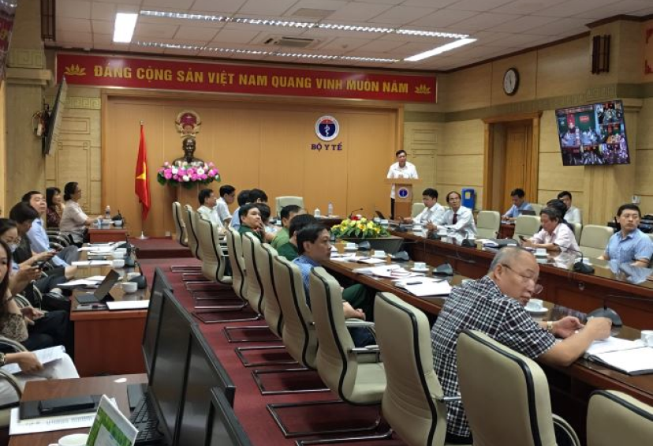
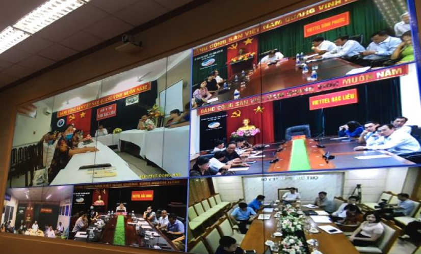

Sáng ngày 21/9/2020 tại Hà Nội, Bộ Y tế tổ chức Hội nghị trực tuyến tăng cường công tác phòng chống dịch bệnh, công tác tiêm chủng và an toàn tiêm chủng năm 2020. Đồng chí Đỗ Xuân Tuyên, Thứ trưởng Bộ Y tế chủ trì Hội nghị. Tại điểm cầu Trung ương có đại diện Lãnh đạo và chuyên viên các Vụ/Cục/Văn phòng/đơn vị thuộc và trực thuộc Bộ Y tế và các đơn vị liên quan. Tại 700 điểm cầu trên cả nước (Phòng họp trực tuyến của các Sở Y tế, các đơn vị trực thuộc Bộ Y tế, Chi nhánh của Viettel tại các tỉnh, thành phố, quận, huyện) có đại diện Lãnh đạo UBND; Sở Y tế; Lãnh đạo các bệnh viện, Trung tâm Y tế các tỉnh/thành phố.

Đồng chí Đỗ Xuân Tuyên, Thứ trưởng Bộ Y tế phát biểu tại Hội nghị
Phát biểu khai mạc Hội nghị, đồng chí Đỗ Xuân Tuyên, Thứ trưởng Bộ Y tế cho biết: "Trong thời gian qua, tình hình dịch bệnh truyền nhiễm từng bước được kiểm soát, đặc biệt công tác phòng, chống dịch COVID-19 đã làm tốt được thế giới đánh giá cao. Tuy nhiên đối với các dịch khác như sốt xuất huyết, chân tay miệng, sốt rét tuy đã giảm mạnh so với cùng kỳ năm 2019 nhưng trong thời gian qua, dịch sốt xuất huyết vẫn ghi nhận số ca nhiễm tăng cao cục bộ ở một số địa phương. Đặc biệt ở các tỉnh miền Trung và Tây Nguyên ghi nhận nhiều ca mắc bệnh bạch hầu".
Theo dự báo, những tháng cuối năm 2020 và đầu năm 2021, dịch bệnh vẫn diễn biến phức tạp. Đặc biệt, thời tiết mùa Đông - Xuân là thời gian thuận lợi cho dịch bệnh phát triển. Thực hiện chỉ đạo của Chính phủ và Thủ tướng Chính phủ, Việt Nam tiếp tục thực hiện mục tiêu kép vừa phát triển kinh tế-xã hội vừa phòng chống dịch.

TS. Đặng Quang Tấn, Cục trưởng Cục Y tế dự phòng báo cáo tại Hội nghị
Tại Hội nghị đã nêu được tình hình dịch bệnh sốt xuất huyết, bạch hầu và các hoạt động phòng, chống dịch đã triển khai cũng như các Hướng dẫn kỹ thuật các tuyến về công tác giám sát, xử lý và phòng chống bạch hầu, Hướng dẫn kỹ thuật các tuyến về công tác giám sát, xử lý và phòng, chống bệnh sốt xuất huyết cùng với các Cập nhật phác đồ điều trị bệnh sốt xuất huyết ở người lớn, phác đồ điều trị sốt xuất huyết ở trẻ em, phác đồ điều trị bạch hầu. Ngoài ra tại Hội nghị còn nêu rõ về quy trình tiêm chủng an toàn và quy định giám sát tai biến tiêm chủng.
Theo dự báo, những tháng cuối năm 2020 và đầu năm 2021, dịch bệnh vẫn diễn biến phức tạp. Đặc biệt, thời tiết mùa Đông - Xuân là thời gian thuận lợi cho dịch bệnh phát triển. Thực hiện chỉ đạo của Chính phủ và Thủ tướng Chính phủ, Việt Nam tiếp tục thực hiện mục tiêu kép vừa phát triển kinh tế-xã hội vừa phòng chống dịch.
Để chủ động phòng chống hiệu quả dịch bệnh trong thời gian tới, đồng chí Thứ trưởng Đỗ Xuân Tuyên chỉ đạo đối với công tác tiêm chủng: đề nghị ngay sau Hội nghị này, Sở Y tế các tỉnh báo cáo Ủy ban nhân dân xây dựng và triển khai tiêm chủng đầy đủ, an toàn theo chỉ đạo của Bộ Y tế tại 4 kế hoạch tiêm chủng vắc (Kế hoạch uống bổ sung OPV, Kế hoạch tiêm vắc xin MR, Kế hoạch đảm bảo dây chuyền lạnh cho VX, Kế hoạch tiêm vắc xin uốn ván – bạch hầu giảm liều (Td )cho trẻ em 7 tuổi).
Phát biểu kết luận tại Hội nghị, đồng chí Đỗ Xuân Tuyên, Thứ trưởng Bộ Y tế đề nghị sau Hội nghị này, Sở Y tế làm đầu mối để triển khai thực hiện các nội dung sau:
1.Tham mưu Ủy ban nhân dân tỉnh, thành phố tăng cường chỉ đạo các cấp, các ngành tăng cường các hoạt động phòng chống dịch, lồng ghép trong phòng chống và kiểm soát dịch COVID-19 theo các chỉ đạo của Chính phủ, Thủ tướng Chính phủ, Bộ Y tế; có kế hoạch cụ thể triển khai ngay các biện pháp phù hợp nhằm ngăn chặn sự phát sinh và bùng phát của dịch bệnh. Lưu ý đặc biệt đối với các huyện, xã vùng sâu, vùng xa, vùng đặc biệt khó khăn với nguy cơ cao về dịch bệnh, có hạn chế về tiếp cận dịch vụ y tế và biến động dân cư cao.
2.Tăng cường công tác truyền thông giáo dục sức khoẻ, tăng cường phát sóng các thông điệp, khuyến cáo tới người dân về các biện pháp phòng chống dịch bệnh thường gặp trong mùa đông xuân; thực hiện tốt việc vệ sinh cá nhân, vệ sinh môi trường, sử dụng nước sạch và bảo đảm an toàn thực phẩm; tổ chức chiến dịch rửa tay bằng xà phòng, thực hiện an toàn vệ sinh thực phẩm, vệ sinh ăn uống, ăn chín uống chí; tự giác thực hiện diệt lăng quăng(bọ gậy); tuyên truyền các biện pháp phòng, chống dịch bệnh tại các hộ gia đình và cộng đồng bằng nhiều hình thức như họp tổ dân phố, họp dân, tập huấn, hướng dẫn tại chỗ, tờ rơi, loa đài, phát thanh, báo chí, truyền hình; tuyên truyền về lợi ích của việc tiêm chủng phòng bệnh và đưa trẻ đi tiêm chủng.
3. Phối hợp chặt chẽ với ngành Giáo dục và Đào tạo để triển khai mạnh mẽ các hoạt động phòng chống dịch bệnh tại các cơ sở giáo dục ngay từ đầu năm học 2020 - 2021. Thực hiện vệ sinh lớp học thường xuyên, bố trí đủ xà phòng, nước sạch và các phương tiện rửa tay cho học sinh; hướng dẫn học sinh và người chăm sóc trẻ em cách rửa tay bằng xà phòng, làm sạch bề mặt và đồ chơi hằng ngày bằng xà phòng hoặc các chất tẩy rửa thông thường.
4. Huy động học sinh tham gia các hoạt động vệ sinh lớp học, vệ sinh môi trường, hướng dẫn các hoạt động nhằm loại bỏ lăng quăng (bọ gậy) tại các vật dụng chứa nước trong nhà và khu vực xung quanh. Phát hiện sớm các trường hợp mắc bệnh tại các cơ sở giáo dục, thông báo ngay cho cơ quan y tế địa phương để tổ chức khám, điều trị và xử lý ổ dịch kịp thời.
5. Chỉ đạo các đơn vị y tế tăng cường giám sát, phát hiện sớm các trường hợp mắc bệnh, thực hiện cách ly, kịp thời xử lý triệt để ổ dịch không để bùng phát dịch trong cộng đồng; tăng cường lấy mẫu xét nghiệm xác định tác nhân gây bệnh; củng cố các đội chống dịch cơ động, đội cấp cứu lưu động sẵn sàng điều tra, xác minh, đánh giá, xử lý ổ dịch và hỗ trợ tuyến dưới trong việc khống chế ổ dịch, cấp cứu, điều trị khi cần thiết. Tổ chức tốt việc thu dung điều trị bệnh nhân, lưu ý đối với các bệnh nhân nặng, hạn chế thấp nhất các trường hợp tử vong. Thực hiện tốt phòng tránh lây nhiễm chéo trong các cơ sở điều trị.
6. Tăng cường chỉ đạo triển khai hoạt động tiêm chủng tại các tỉnh trên địa bàn phụ trách, đảm bảo tỷ lệ tiêm chủng đạt 95 % trên quy mô xã, phường. Đặc biệt tại các tỉnh có ghi nhận các trường hợp bạch hầu khu vực Tây Nguyên, tiếp tục triển khai Quyết định số 3054/QĐ-BYT ngày 15/7/2020 của Bộ Y tế về việc phê duyệt kế hoạch tiêm vắc xin phòng chống dịch bạch hầu. Đẩy nhanh tiến độ triển khai chiến dịch tiêm bổ sung vắc xin Td năm 2020-2021 theo quyết định 2155/QĐ-BYT ngày 25/5/2020 của Bộ Y tế. Xử lý các tình huống trong tiêm chủng, phản ứng sau tiêm chủng, khủng hoảng truyền thông trên địa bàn. Tăng cường giám sát, đôn đốc các đơn vị, địa phương thực hiện các quy định hiện hành đảm bảo chất lượng tiêm chủng.
7. Phối hợp ngành Nông nghiệp và Phát triển nông thôn, ngành Công thương và đơn vị liên quan trong việc tăng cường giám sát, phát hiện sớm các ổ dịch ở động vật, đặc biệt là cúm ở gia cầm, xử lý triệt để ổ dịch không để lây nhiễm sang người; phòng ngừa, ngăn chặn vận chuyển, kinh doanh gia cầm và các sản phẩm gia cầm nhập khẩu trái phép, bảo đảm thực hiện tốt các hoạt động phòng, chống dịch cúm gia cầm nói chung và các hoạt động bắt giữ, tiêu hủy gia cầm và sản phẩm gia cầm nhập lậu.
8. Chủ động chuẩn bị đủ kinh phí để đảm bảo nhu cầu về thuốc, vật tư, hóa chất, trang thiết bị cho các hoạt động phòng, chống dịch bệnh. Tổ chức tập huấn, cập nhật kiến thức về giám sát phát hiện bệnh và điều trị ở tất cả các tuyến để nâng cao năng lực cho đội ngũ cán bộ y tế.
9. Tổ chức các Đoàn kiểm tra liên ngành để kiểm tra và hỗ trợ các địa phương giải quyết ngay các khó khăn, vướng mắc và có biện pháp chỉ đạo kịp thời, phù hợp./.


 Tin đọc nhiều nhất
Tin đọc nhiều nhất